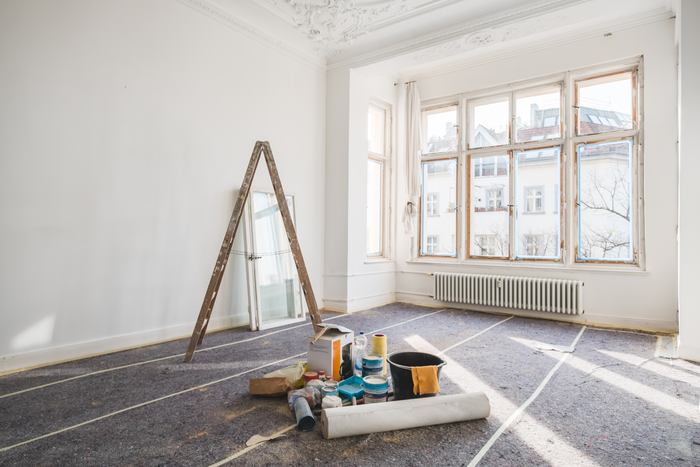
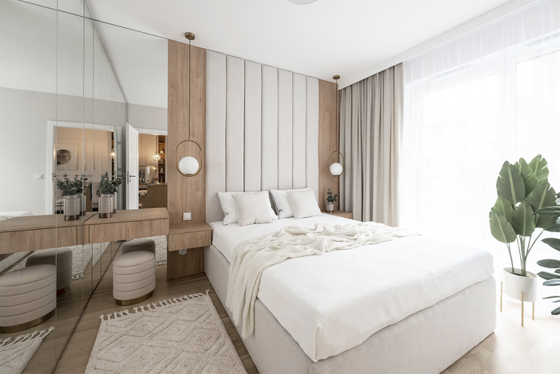

NADZÓR AUTORSKI REMONTU
Dla osób, które oczekują wygody i pełnej kontroli procesu przebiegu remontu przez architekta
wnętrz.
W zależności od potrzeb w skład nadzoru autorskiego może wchodzić:
-
Omówienie projektu z ekipą wykonawczą i stolarzem (1 spotkanie w cenie projektu kompleksowego).
-
Pomoc w wyborze wykonawców.
-
Regularne wizyty na budowie w celu kontroli zgodności prac z projektem wnętrza pod kątem kolorystycznym, materiałowym,
zachowania odpowiednich form i ułożenia materiałów, by zapewnić wizualne powodzenie projektu.
-
Stały kontakt telefoniczny z ekipę remontową, stolarzem i innymi wykonawcami, ustalanie terminów.
-
Modyfikacje rozwiązań projektowych w przypadku nieprzewidzianych barier technicznych lub braku materiałów na stanie.
-
Obecność podczas montowania mebli na wymiar, kontrola zgodności ich z projektem,
rozwiązania ‘ad hoc’ w przypadku barier technicznych budynku.
-
Organizacja usługi montażu mebli ruchomych.
-
Organizacja usługi sprzątania poremontowego.
-
Towarzyszenie podczas zakupów lub zakup dekoracji za określony budżet, finalna stylizacja wnętrza dodatkami i tekstyliami.
Cena:
- Dowolna ilość wizyt/prac w zależności od potrzeb 200zł/h
- lub
- cena ustalona z góry za stały nadzór, około 30-50% wartości projektu kompleksowego.
Etapy współpracy:
9. Nadzór autorski prac remontowych

Regularne wizyty na budowie, lub w wyznaczonych przez Ciebie terminach zgodnie z potrzebami, w celu kontroli zgodności prowadzonych prac z projektem kompleksowym.
Opieka nad procesem remontu w celu osiągnięcia zamierzonego efektu wizualnego. Stały kontakt telefoniczny z wykonawcami, modyfikacja rozwiązań w razie nieprzewidzianych barier technicznych.
10. Nadzór autorski wyposażenia

Nadzór podczas instalacji mebli na wymiar, montażu mebli ruchomych i pozostałego wyposażenia, kontrola zgodności z projektem.
Podejmowanie działań zaradczych w przypadku nieprzewidzianych barier. Odpowiednia stylizacja tkanin i dodatków, by osiągnąć zamierzony efekt wizualny, zapewnić równowagę i spójność wnętrza.
Lokum jest gotowe do zamieszkania.
W zależności od potrzeb w skład nadzoru autorskiego może wchodzić:
- Omówienie projektu z ekipą wykonawczą i stolarzem (1 spotkanie w cenie projektu kompleksowego).
- Pomoc w wyborze wykonawców.
- Regularne wizyty na budowie w celu kontroli zgodności prac z projektem wnętrza pod kątem kolorystycznym, materiałowym, zachowania odpowiednich form i ułożenia materiałów, by zapewnić wizualne powodzenie projektu.
- Stały kontakt telefoniczny z ekipę remontową, stolarzem i innymi wykonawcami, ustalanie terminów.
- Modyfikacje rozwiązań projektowych w przypadku nieprzewidzianych barier technicznych lub braku materiałów na stanie.
- Obecność podczas montowania mebli na wymiar, kontrola zgodności ich z projektem, rozwiązania ‘ad hoc’ w przypadku barier technicznych budynku.
- Organizacja usługi montażu mebli ruchomych.
- Organizacja usługi sprzątania poremontowego.
- Towarzyszenie podczas zakupów lub zakup dekoracji za określony budżet, finalna stylizacja wnętrza dodatkami i tekstyliami.
Cena:
- Dowolna ilość wizyt/prac w zależności od potrzeb 200zł/h
- lub
- cena ustalona z góry za stały nadzór, około 30-50% wartości projektu kompleksowego.
Etapy współpracy:
9. Nadzór autorski prac remontowych
Regularne wizyty na budowie, lub w wyznaczonych przez Ciebie terminach zgodnie z potrzebami, w celu kontroli zgodności prowadzonych prac z projektem kompleksowym. Opieka nad procesem remontu w celu osiągnięcia zamierzonego efektu wizualnego. Stały kontakt telefoniczny z wykonawcami, modyfikacja rozwiązań w razie nieprzewidzianych barier technicznych.
10. Nadzór autorski wyposażenia
Nadzór podczas instalacji mebli na wymiar, montażu mebli ruchomych i pozostałego wyposażenia, kontrola zgodności z projektem. Podejmowanie działań zaradczych w przypadku nieprzewidzianych barier. Odpowiednia stylizacja tkanin i dodatków, by osiągnąć zamierzony efekt wizualny, zapewnić równowagę i spójność wnętrza.